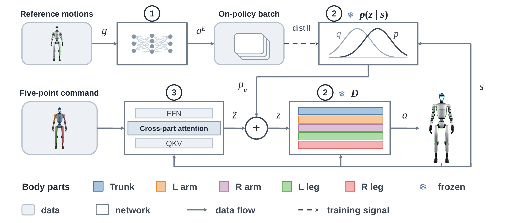
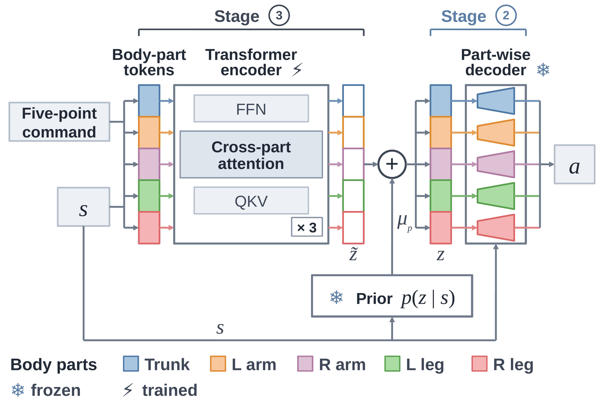

Humanoid motion-tracking policies are typically developed under nominal actuation, yet actuators can weaken or fail over a robot's service life. A local actuator impairment can affect whole-body tracking and require coordinated compensation from intact body parts. We therefore ask whether organizing the control representation around body parts provides a useful inductive bias for fault-tolerant tracking. We present FailureMimic, a framework that distills a whole-body tracking policy into a part-wise latent motion model and adapts the frozen model with a residual policy that coordinates across body parts. The residual policy is not given the identity of the impaired joints. In simulation on a Unitree G1, FailureMimic achieves higher fall-free survival than monolithic and non-part-aware baselines under passive leg impairments and systematic pushes; its margin grows with impairment severity and persists at severities not encountered during training. The same structure also serves the opposite demand: because body parts stay separable, it tracks novel combinations of upper- and lower-body motions. On the physical G1, FailureMimic autonomously performs loco-manipulation with passive or locked joints and tracks stitched motions.

Overview of the three stages. Stage 1: a whole-body expert tracks reference motions g, emitting joint-position targets. Stage 2: the expert is distilled into a part-wise latent prior p(z | s), aligned by a divergence term with a training-time posterior. Stage 3: the prior and decoder are frozen, and a body-part Transformer maps the state and the sparse five-point command to a residual. Colors mark the five trunk–limb groups.

Part-wise architecture. The command, proprioceptive state, and attitude signals are tokenized by body part into five tokens; a Transformer encoder mixes them by self-attention, and zero-initialized per-part heads emit the latent residual. The residual shifts the frozen prior mean, and each latent slice is decoded by an independent branch driving only its own group's joints. Snowflakes mark frozen modules; the bolt marks the trained residual generator.
Box carrying
Box carrying with right-wrist damping
Box carrying with right hip-roll damping
Box carrying with left-elbow locking
Box pushing
Box pushing with right ankle-roll damping
damping left ankle roll joint
damping right hip yaw joint
damping right ankle roll joint
damping right ankle pitch joint
lock left knee
lock left hip roll joint
@article{ji2027failuremimic,
author = {Ji, Ziteng and Hong, Chuye and Shao, Yiyang and Sreenath, Koushil},
title = {{FailureMimic}: Humanoid Motion Tracking under Actuator Failure via Part-Wise Latent Residuals},
journal = {In-submission},
year = {2027},
}